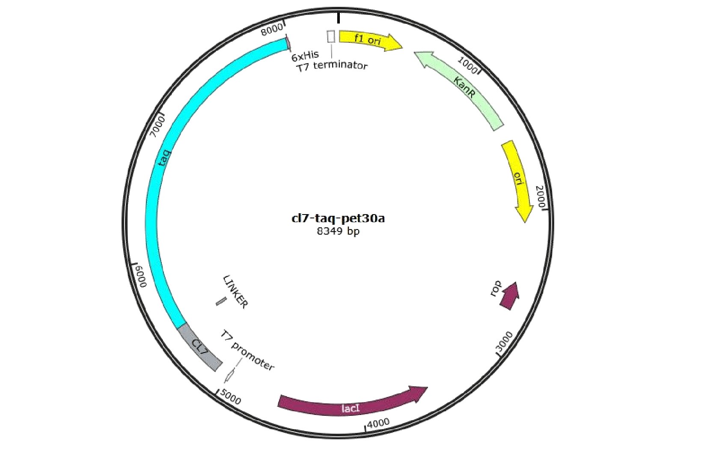
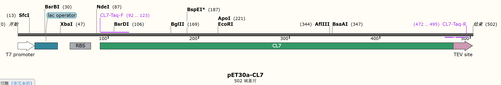
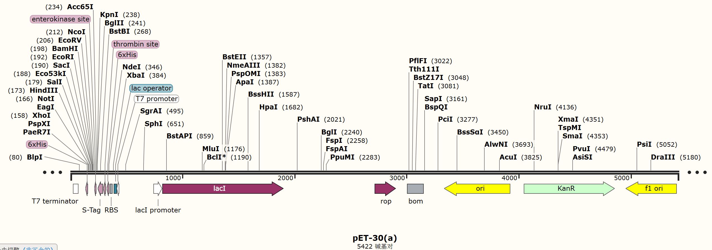
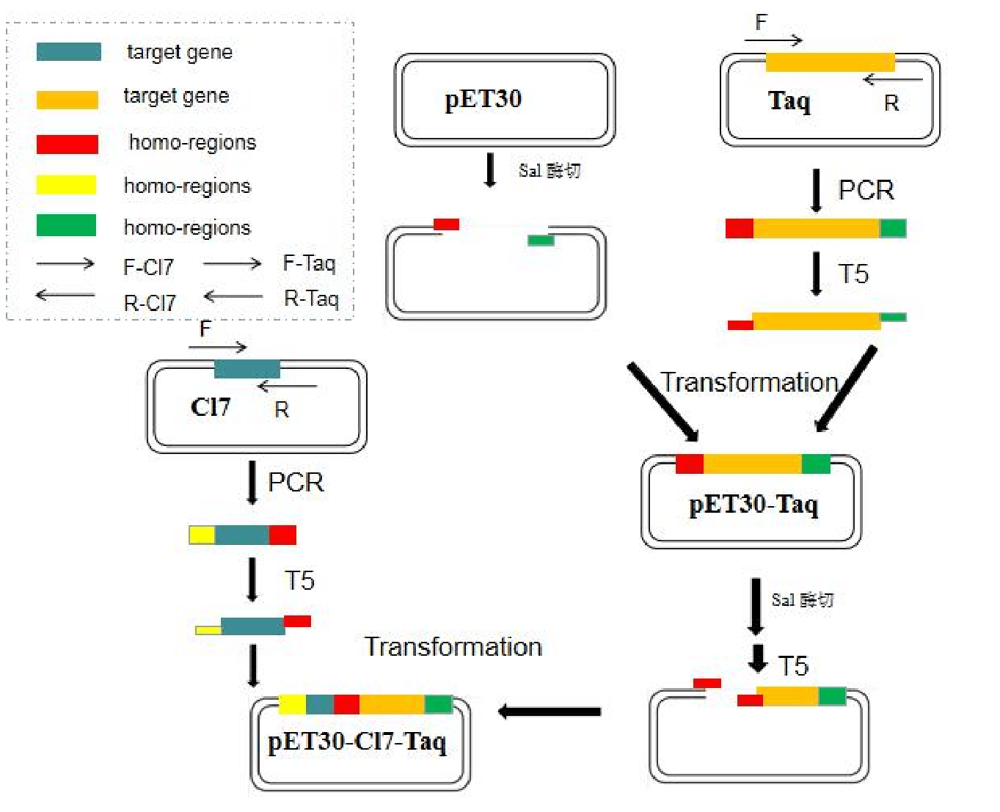
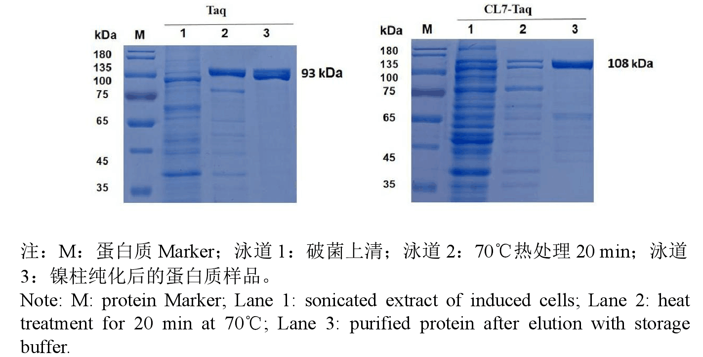

BASIC PARTS
BASIC PART 1: Taq-6His
Short description:YT-1 Taq with 6-His tag
Schematic diagrams (design):
Long description:我们选择源于Thermus aquaticus YT-1的Taq酶基因序列（GenBank∶P19821.1）作为研究目的基因。通过设计用来扩增两段基因序列的引物，引物在Taq基因两端的序列与载体的序列同源，并在 Taq DNA聚合酶的C端加 His 标签（CATCACCATCACCATCAC）用于亲和纯化，在其N段的引物添加TEV标签作为linker为融合蛋白做准备。便于后续的变量实验，并从合成质粒上将Taq（2539 bp）全长基因扩增出来。
BASIC PART 2: CL7-TEV
Short description:CL7 with TEV
Schematic diagrams (design):
Long description:在数据库找寻源于大肠杆菌CE7突变体CL7的基因序列（GenBank∶CP018986.1)。在其C段的引物添加TEV标签作为linker为融合蛋白做准备。便于后续的变量实验，并从合成质粒上将CL7复合体（411 bp）全长基因扩增出来。
COMPOSITE PART
PART:pET-30a-CL7-Taq
Schematic diagrams (design):
Long description：在获得Taq-6His和 CL7-TEV元件后，我们选择了 pET30a作为载体。在扩增 Taq DNA 聚合酶的基因时，用引物在酶的 C 端加上 6His 纯化标签，先用 T5 介导的克隆方法，分别将 Taq 和 CL7-Taq 基因克隆到带有卡那抗性基因的 pET30a 载体上，预期质粒大小分别为 8.0 kb 和 8.4 kb 左右。
 用SalⅠ限制性内切酶处理，分别回收酶切后的载体与 Taq基因片段，利用T5核酸酶介导的克隆方法来构建pET-30a-Taq表达质粒。同样的方法构建最终构建出 pET-30a-CL7-Taq表达质粒。
实验流程图：
RESULT:
纯化图：
